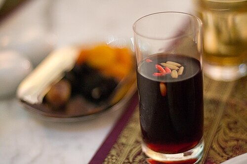
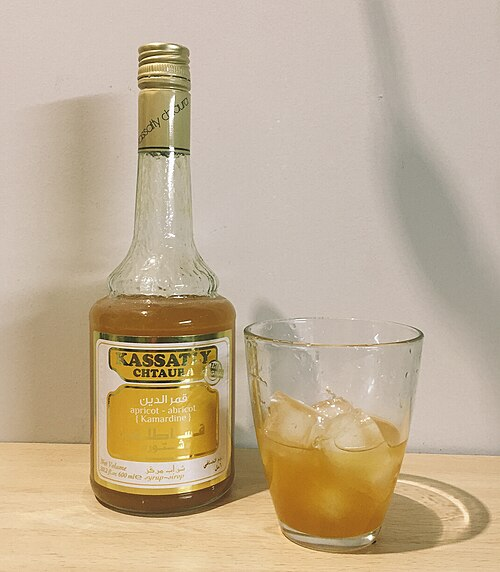

SIX REGIONS. 278 FOOD PHOTOGRAPHS.
A feast for the eyes .
A photo journal of 278 foods across six regions: all 260 menu entries plus 18 collage extras. Choose a region for its twelve-photo collection, then open any picture for a closer look. Photographs show example servings; ingredients and toppings may differ. The feijoa smoothie uses a clearly labelled ingredient photo.
278 photographs

Asia · From our menu
Mango Lassi
Mango Lassi
Photo: Ayshamarjana · CC BY-SA 4.0 · Source
Explore Asia menus →

Asia · From our menu
Poha
Poha
Photo: Ajay Suresh from New York, NY, USA · CC BY 2.0 · Source
Explore Asia menus →.jpg){kind=link}

Asia · From our menu
Idli
Idli
Photo: Belrien12 · CC BY-SA 4.0 · Source
Explore Asia menus →

Asia · From our menu
Tamagoyaki
Tamagoyaki
Photo: jetalone · CC BY 2.0 · Source
Explore Asia menus →

Asia · From our menu
Chana Masala
Chana Masala
Photo: Bhavana Homecook · CC BY-SA 4.0 · Source
Explore Asia menus →

Asia · From our menu
Vegetable Sushi Rolls
Vegetable Sushi Rolls
Photo: Makesushi · CC BY-SA 3.0 · Source
Explore Asia menus →

Asia · From our menu
Chicken Biryani
Chicken Biryani
Photo: Delhifoodwalks · CC BY-SA 4.0 · Source
Explore Asia menus →

Asia · Collage extra
Gulab Jamun
Gulab Jamun
Photo: Amit.jay32 · CC BY-SA 4.0 · Source
Explore Asia menus →

Asia · Collage extra
Pad Thai
Pad Thai
Photo: Douglas Perkins · CC BY 4.0 · Source
Explore Asia menus →

Asia · Collage extra
Mochi
Mochi
Photo: Kropsoq · CC BY-SA 3.0 · Source
Explore Asia menus →

Asia · From our menu
Masala Chai
Masala Chai
Photo: Ganesh Mohan T · CC BY-SA 4.0 · Source
Explore Asia menus →

Asia · From our menu
Matcha Latte
Matcha Latte
Photo: Marife.altabano · CC BY-SA 4.0 · Source
Explore Asia menus →

Europe · From our menu
Espresso
Espresso
Photo: Jubair1985 · CC0 · Source
Explore Europe menus →

Europe · From our menu
Spanish Hot Chocolate
Spanish Hot Chocolate
Photo: LWY from Pasadena, USA · CC BY 2.0 · Source
Explore Europe menus →

Europe · From our menu
Lemon Granita
Lemon Granita
Photo: DinaBenedettoFerrandina · CC BY-SA 4.0 · Source
Explore Europe menus →

Europe · From our menu
Porridge
Porridge
Photo: Denna Jones from London, England, United Kingdon · CC BY 2.0 · Source
Explore Europe menus →

Europe · From our menu
Tostada con Tomate
Tostada con Tomate
Photo: Urci dream · CC BY-SA 4.0 · Source
Explore Europe menus →

Europe · From our menu
Scrambled Eggs on Toast
Scrambled Eggs on Toast
Photo: Kolforn (Wikimedia) · CC BY-SA 4.0 · Source
Explore Europe menus →

Europe · From our menu
Ratatouille
Ratatouille
Photo: Arnaud 25 · CC BY-SA 4.0 · Source
Explore Europe menus →

Europe · From our menu
Fish and Chips
Fish and Chips
Photo: Joedinator · CC0 · Source
Explore Europe menus →.jpg){kind=link}

Europe · Collage extra
Croissant
Croissant
Photo: Gaurav Dhwaj Khadka · CC BY-SA 4.0 · Source
Explore Europe menus →

Europe · Collage extra
Paella
Paella
Photo: Juan Emilio Prades Bel · CC BY-SA 4.0 · Source
Explore Europe menus →

Europe · Collage extra
Greek Salad
Greek Salad
Photo: Armineaghayan · CC BY-SA 4.0 · Source
Explore Europe menus →

Europe · From our menu
Pasta al Pomodoro
Pasta al Pomodoro
Photo: 10Rosso · CC BY 2.0 · Source
Explore Europe menus →

Africa · From our menu
Mint Tea
Mint Tea
Photo: Adam Harangozó · CC BY-SA 4.0 · Source
Explore Africa menus →

Africa · From our menu
Bissap
Bissap
Photo: Jnjungei (Joshua Njung'ei Ngugi) · CC BY-SA 4.0 · Source
Explore Africa menus →.jpg){kind=link}

Africa · From our menu
Rooibos Tea
Rooibos Tea
Photo: StockyPics · CC0 · Source
Explore Africa menus →.jpg){kind=link}

Africa · From our menu
Ful Medames
Ful Medames
Photo: Zachbe at en.wikipedia · CC BY-SA 3.0 · Source
Explore Africa menus →

Africa · From our menu
Mandazi
Mandazi
Photo: Orrling · CC BY-SA 3.0 · Source
Explore Africa menus →

Africa · From our menu
Vegetable Couscous
Vegetable Couscous
Photo: Slothtysloth · CC BY-SA 4.0 · Source
Explore Africa menus →

Africa · Collage extra
Bunny Chow
Bunny Chow
Photo: David Berkowitz from New York, NY, USA · CC BY 2.0 · Source
Explore Africa menus →

Africa · From our menu
Uji
Sour millet porridge, an illustrative uji-style serving
Photo: Odegisam · CC BY-SA 4.0 · Source
Explore Africa menus →

Africa · From our menu
Vegetable Jollof Rice
A vegan jollof rice serving with plant-based chicken
Photo: Dprzvhar · CC0 · Source
Explore Africa menus →

Africa · From our menu
Doro Wat
Doro wat served with injera
Photo: Edsel Little · CC BY-SA 2.0 · Source
Explore Africa menus →

Africa · Collage extra
Bobotie
Bobotie served with rice and chutney
Photo: Olga Ernst · CC BY-SA 4.0 · Source
Explore Africa menus →

Africa · Collage extra
Injera
Injera flatbread on its cooking surface
Photo: Visio · CC BY-SA 4.0 · Source
Explore Africa menus →

Americas · From our menu
Agua de Jamaica
Agua de Jamaica
Photo: claralieu · CC BY 2.0 · Source
Explore Americas menus →

Americas · From our menu
Hot Cocoa
Hot Cocoa
Photo: 4028mdk09 · CC BY-SA 3.0 · Source
Explore Americas menus →

Americas · From our menu
Arepas
Arepas
Photo: Fora do Eixo · CC BY-SA 2.0 · Source
Explore Americas menus →

Americas · From our menu
Gallo Pinto
Gallo Pinto
Photo: Gmasmcal · CC BY 4.0 · Source
Explore Americas menus →

Americas · From our menu
Breakfast Burrito
Breakfast Burrito
Photo: FASTILY · CC BY-SA 4.0 · Source
Explore Americas menus →

Americas · From our menu
Vegetarian Tacos
Vegetarian Tacos
Photo: jasonlam · CC BY-SA 2.0 · Source
Explore Americas menus →

Americas · From our menu
Beef Empanadas
Beef empanada with onion, pepper and olives
Explore Americas menus →

Americas · Collage extra
Guacamole
Guacamole
Photo: Nikodem Nijaki · CC BY-SA 3.0 · Source
Explore Americas menus →

Americas · Collage extra
Poutine
Poutine
Photo: Antonydstevens · CC0 · Source
Explore Americas menus →

Americas · From our menu
Limonada
Limonada served in Tulum, Mexico
Photo: edenpictures · CC BY 2.0 · Source
Explore Americas menus →

Americas · From our menu
Vegetarian Chili
Chili sin carne: a vegan bean chili serving
Photo: Benreis · CC BY-SA 4.0 · Source
Explore Americas menus →

Americas · Collage extra
Pancakes
American pancakes with maple syrup
Photo: Hortensja Bukietowa · CC BY-SA 4.0 · Source
Explore Americas menus →

Middle East · From our menu
Arabic Coffee
Arabic coffee serving pots and cups
Photo: Cloud Consciousness · CC0 · Source
Explore Middle East menus →

Middle East · From our menu
Ayran
Ayran
Photo: E4024 · CC BY-SA 4.0 · Source
Explore Middle East menus →.jpg){kind=link}

Middle East · From our menu
Lemon Mint Drink
Lemon Mint Drink
Photo: Sadiikul · CC BY-SA 4.0 · Source
Explore Middle East menus →.jpg){kind=link}

Middle East · From our menu
Manakish with Zaatar
Manakeesh topped with zaatar
Photo: © N. Saum (Nsaum75) · CC BY-SA 3.0 · Source
Explore Middle East menus →

Middle East · From our menu
Labneh Plate
Labneh with olive oil; serving accompaniments vary
Photo: Omernos~commonswiki · Public domain · Source
Explore Middle East menus →

Middle East · From our menu
Shakshuka
Shakshuka
Photo: Jarosław Ceborski · CC0 · Source
Explore Middle East menus →.jpg){kind=link}

Middle East · From our menu
Mujadara
Mujadara
Photo: Bazel · CC BY-SA 3.0 · Source
Explore Middle East menus →

Middle East · From our menu
Falafel Wrap
Falafel Wrap
Photo: FakirNL · CC BY-SA 4.0 · Source
Explore Middle East menus →

Middle East · From our menu
Chicken Shawarma Bowl
Chicken Shawarma Bowl
Photo: CrunchySkies · CC BY-SA 3.0 · Source
Explore Middle East menus →

Middle East · Collage extra
Baklava
Baklava
Explore Middle East menus →

Middle East · Collage extra
Tabbouleh
Tabbouleh salad
Photo: Miansari66 · CC0 · Source
Explore Middle East menus →

Middle East · Collage extra
Hummus
Hummus and pita
Photo: Popo le Chien · CC0 · Source
Explore Middle East menus →

Oceania · From our menu
Flat White
Flat White
Photo: Ashley Van Haeften · CC BY 2.0 · Source
Explore Oceania menus →

Oceania · From our menu
Feijoa Smoothie
Feijoa fruit — the main ingredient in this smoothie (ingredient photo)
Photo: HortResearch photographer (uploaded by ACurrie) · CC BY-SA 3.0 · Source
Explore Oceania menus →

Oceania · From our menu
Coconut Water
Coconut Water
Photo: Miansari66 · CC0 · Source
Explore Oceania menus →

Oceania · From our menu
Avocado Toast
Avocado toast with vegan feta and seeds; toppings vary
Explore Oceania menus →

Oceania · From our menu
Weet-Bix with Fruit
Weet-Bix cereal base, shown without the optional fruit topping
Photo: Stevage · CC BY-SA 4.0 · Source
Explore Oceania menus →

Oceania · From our menu
Eggs on Sourdough
Poached eggs on sourdough, with matcha salt garnish
Photo: _e.t · CC BY-SA 2.0 · Source
Explore Oceania menus →

Oceania · From our menu
Kumara Soup
Sweet potato soup with pecan garnish — illustrative serving of kumara soup; garnishes vary
Photo: Infrogmation of New Orleans · CC BY-SA 3.0 · Source
Explore Oceania menus →

Oceania · From our menu
Vegetable Barbecue
Peppers, onion and squash on a grill
Photo: Chris Lawton · CC0 · Source
Explore Oceania menus →.jpg){kind=link}

Oceania · From our menu
Meat Pie
Meat Pie
Photo: Finbar.concaig · CC BY-SA 4.0 · Source
Explore Oceania menus →.jpg){kind=link}

Oceania · Collage extra
Lamingtons
Lamingtons
Photo: jules · CC BY 2.0 · Source
Explore Oceania menus →

Oceania · Collage extra
Anzac biscuits
Anzac biscuits (a version without coconut)
Photo: Pfctdayelise · CC BY-SA 2.5 · Source
Explore Oceania menus →.jpg){kind=link}

Oceania · Collage extra
Pavlova
Pavlova with berries
Photo: jules: stone soup · CC BY 2.0 · Source
Explore Oceania menus →

Oceania · From our menu
Lemon, lime and bitters
Build over ice, add bitters and citrus, then top with lemonade.
Photo: Alpha · CC BY-SA 2.0 · Source
Explore Oceania menus →

Oceania · From our menu
ʻOtai
Grate or mash fruit, mix with coconut and liquid, then chill.
Photo: Paulscf · CC BY-SA 3.0 · Source
Explore Oceania menus →

Oceania · From our menu
Lemon myrtle tea
Steep leaves in hot water and strain.
Photo: Finbar.concaig · CC BY-SA 4.0 · Source
Explore Oceania menus →

Oceania · From our menu
Bundaberg ginger beer
Brew or ferment the ginger-and-sugar mixture, then serve chilled.
Photo: TCY · CC BY-SA 4.0 · Source
Explore Oceania menus →

Oceania · From our menu
Milo
Stir powder into hot or cold milk or water.
Photo: Monkeyblue · CC BY-SA 3.0 · Source
Explore Oceania menus →

Oceania · From our menu
Lemon & Paeroa (L&P)
Serve chilled; the commercial formula is proprietary.
Photo: Kristoferb · CC BY-SA 3.0 · Source
Explore Oceania menus →

Oceania · From our menu
Wattleseed damper
Mix into a firm dough and bake in an oven or camp oven.
Photo: Finbar.concaig · CC BY-SA 4.0 · Source
Explore Oceania menus →.jpg){kind=link}

Oceania · From our menu
Rēwena bread
Ferment the starter, make and proof the dough, then bake.
Photo: Groot42 · CC0 1.0 · Source
Explore Oceania menus →

Oceania · From our menu
Vegemite on toast
Toast bread, add butter if desired, and spread Vegemite thinly.
Photo: Tristanb · CC BY-SA 3.0 · Source
Explore Oceania menus →

Oceania · From our menu
Bacon-and-egg roll
Fry bacon and egg, then place them in the roll.
Photo: Ollyquinn · CC BY 4.0 · Source
Explore Oceania menus →.jpg){kind=link}

Oceania · From our menu
Australian bacon-and-eggs breakfast
Fry bacon and eggs; serve with toast.
Photo: Kgbo · CC BY-SA 4.0 · Source
Explore Oceania menus →

Oceania · From our menu
Smoked-salmon pikelets
Cook small pancakes on a griddle, then add the salmon and toppings.
Photo: MBC Foods · CC BY 2.0 · Source
Explore Oceania menus →.jpg){kind=link}

Oceania · From our menu
Hāngī dinner
Cook food in baskets over heated stones in a covered pit.
Photo: einalem · CC BY-SA 2.0 · Source
Explore Oceania menus →

Oceania · From our menu
Māori boil-up
Simmer meat and vegetables; add dumplings to cook through.
Photo: Matyas Havel · CC BY-SA 3.0 · Source
Explore Oceania menus →

Oceania · From our menu
Mumu
Layer ingredients in an earth oven and cook using heated stones.
Photo: Jay Evennett · CC0 1.0 · Source
Explore Oceania menus →

Oceania · From our menu
Fish and chips (Wellington serving)
Coat and fry the fish; fry potatoes and serve together.
Photo: Daderot · CC0 1.0 · Source
Explore Oceania menus →

Oceania · From our menu
Barramundi and chips
Cook the fish and serve with fried potatoes.
Photo: GameBoy2936 · CC BY-SA 4.0 · Source
Explore Oceania menus →

Oceania · From our menu
Australian-style meat pie
Cook the filling until thick, enclose in pastry and bake.
Photo: Finbar.concaig · CC BY-SA 4.0 · Source
Explore Oceania menus →
Europe · From our menu
Glühwein (mulled wine)
Gently warm the wine with spices and citrus to infuse; do not boil.
Photo: Loyna · CC BY-SA 2.5 · Source
Explore Europe menus →

Europe · From our menu
Cappuccino
Pull espresso, steam and foam milk, then pour over the espresso.
Photo: Brian Snelson · CC BY 2.0 · Source
Explore Europe menus →

Europe · From our menu
Sangria
Combine fruit and wine, chill to infuse, and serve cold.
Photo: manray3 · CC BY-SA 2.0 · Source
Explore Europe menus →

Europe · From our menu
Turkish coffee
Slowly heat coffee and water in a cezve until foamy; let grounds settle before serving.
Photo: Yousefmadari · Public domain · Source
Explore Europe menus →

Europe · From our menu
Irish coffee
Dissolve sugar in coffee and whiskey; float lightly whipped cream on top.
Photo: deramaenrama · CC BY 2.0 · Source
Explore Europe menus →

Europe · From our menu
Apple cider (fermented cider)
Ferment pressed juice, mature, then serve chilled or at room temperature.
Photo: Corn cheese · CC0 1.0 · Source
Explore Europe menus →

Europe · From our menu
Karelian pasty (karjalanpiirakka)
Cook the rice, shape and fill the dough, pleat the edges, bake, and brush with butter. Serve plain without egg-butter topping.
Photo: Tiia Monto · CC BY-SA 4.0 · Source
Explore Europe menus →

Europe · From our menu
Muesli
Combine the ingredients; serve directly or soak briefly for a softer texture.
Photo: VirtualSteve · CC BY-SA 2.5 · Source
Explore Europe menus →

Europe · From our menu
Crêpes
Whisk a thin batter, rest briefly, then cook in a lightly buttered pan.
Photo: Physolange · CC0 1.0 · Source
Explore Europe menus →

Europe · From our menu
Croissant
Laminate yeasted dough with butter, shape, proof, and bake until layered and golden.
Photo: JidGom · CC BY-SA 3.0 · Source
Explore Europe menus →

Europe · From our menu
Kaiserschmarrn
Cook a thick pancake in butter, tear into pieces, finish browning, and dust with sugar.
Photo: Jensflorian · CC BY-SA 3.0 · Source
Explore Europe menus →

Europe · From our menu
Swedish pancakes (pannkakor)
Whisk a thin batter and cook small, thin pancakes in a buttered pan; serve with jam.
Photo: Kaj Tallungs · CC BY-SA 4.0 · Source
Explore Europe menus →

Europe · From our menu
Semla
Bake sweet buns, split or hollow them, and fill with almond paste and cream. This preparation omits egg wash.
Photo: my girlfriend (unnamed; as credited on Commons) · CC BY-SA 3.0 · Source
Explore Europe menus →

Europe · From our menu
Goulash
Brown beef and onion, add seasoning and stock, then simmer until tender.
Photo: John Samuel · CC BY-SA 4.0 · Source
Explore Europe menus →

Europe · From our menu
Pierogi (potato-and-cheese filling)
Fill and seal dough rounds, boil until tender, and optionally pan-fry with onion.
Photo: Kpalion · CC BY-SA 3.0 · Source
Explore Europe menus →

Europe · From our menu
Moussaka
Cook the meat sauce, layer with aubergine, top with béchamel, and bake.
Photo: Cifo Buscemi · CC BY 3.0 · Source
Explore Europe menus →

Europe · From our menu
Vegetarian borscht
Simmer vegetables in stock until tender; serve with optional sour cream.
Photo: Peter Isotalo (Commons username Karmosin) · CC BY-SA 3.0 · Source
Explore Europe menus →

Europe · From our menu
Wiener Schnitzel
Pound the cutlet thin, coat in flour, egg, and breadcrumbs, then shallow-fry until crisp.
Photo: Leipnizkeks · CC BY-SA 3.0 · Source
Explore Europe menus →

Europe · From our menu
Lasagna (meat ragù)
Layer ragù, pasta, and béchamel; bake until bubbling and browned.
Photo: Jon Sullivan · Public domain · Source
Explore Europe menus →

Europe · From our menu
Mushroom risotto
Sauté onion and mushrooms, add rice, then stir in warm stock gradually; finish with butter and Parmesan.
Photo: Vít Luštinec · CC BY-SA 3.0 · Source
Explore Europe menus →

Europe · From our menu
Pizza Margherita
Top stretched dough with tomato and cheese, bake hot, then finish with basil and oil.
Photo: Nicholas Gemini · CC BY-SA 4.0 · Source
Explore Europe menus →

Europe · From our menu
Spaghetti carbonara
Cook pasta and pork; toss off the heat with egg-and-cheese mixture and pasta water.
Photo: Pastalover · Public domain · Source
Explore Europe menus →

Europe · From our menu
Stuffed cabbage rolls
Soften cabbage leaves, wrap the filling, and simmer the rolls in tomato sauce until cooked.
Photo: gran · CC BY 3.0 · Source
Explore Europe menus →

Africa · From our menu
Kunu (kunu zaki)
Soak and blend the grain with ginger and sweet potato; mix part with boiling water, combine with the rest, allow to settle or ferment, then strain.
Photo: Agan56 · CC BY-SA 4.0 · Source
Explore Africa menus →

Africa · From our menu
Café Touba
Roast coffee with the spices, grind, then prepare by filtering or drip brewing.
Photo: EquipeTKN · CC BY-SA 4.0 · Source
Explore Africa menus →

Africa · From our menu
Msemmen (msamman)
Make and rest the dough, fold into layered squares, then cook on a griddle.
Photo: إيان · CC BY-SA 4.0 · Source
Explore Africa menus →

Africa · From our menu
Baghrir
Mix and ferment an egg-free batter; pour onto a hot pan and cook on one side until holes form.
Photo: فاطمة الزهراء · CC BY-SA 4.0 · Source
Explore Africa menus →

Africa · From our menu
Akara (àkàrà)
Blend the beans with aromatics, then fry spoonfuls until cooked and golden.
Photo: AkinkuotuFunmi · CC BY-SA 4.0 · Source
Explore Africa menus →

Africa · From our menu
East African chapati
Knead and rest the dough, roll it thin, then cook on a hot pan with a little oil.
Photo: AmyNorth · CC BY-SA 2.0 · Source
Explore Africa menus →

Africa · From our menu
Kocho
Extract and ferment the enset pulp, then cook it as a dense bread; it is commonly served with greens or stews.
Photo: Minarate · CC BY-SA 4.0 · Source
Explore Africa menus →

Africa · From our menu
Koshary (kushari)
Cook rice, lentils and pasta; serve layered with tomato sauce, chickpeas and crisp onions.
Photo: Dina Said · CC BY-SA 4.0 · Source
Explore Africa menus →

Africa · From our menu
Thiéboudienne (tiep)
Season and cook the fish; prepare rice with a tomato-and-vegetable cooking liquid, then serve with the vegetables and fish.
Photo: KVDP · Public domain (PD-self) · Source
Explore Africa menus →

Africa · From our menu
Ndolé
Cook and soften the leaves; prepare a peanut-and-aromatics base, add the chosen protein and simmer together.
Photo: Coco lago · CC BY-SA 4.0 · Source
Explore Africa menus →

Africa · From our menu
Bunny chow
Hollow out a loaf, prepare a curry, and serve it in the bread.
Photo: Luke Comins · CC BY-SA 3.0 · Source
Explore Africa menus →

Africa · From our menu
Jollof rice
Cook down the tomato-pepper base, add rice and vegetable stock, then cover and cook until tender.
Photo: Noahalorwu · CC BY-SA 4.0 · Source
Explore Africa menus →

Africa · From our menu
Mafé (tigadèguèna)
Brown the meat and aromatics, add peanut sauce and liquid, then simmer until tender.
Photo: Marshiayers · CC0 1.0 · Source
Explore Africa menus →

Africa · From our menu
Chakhchoukha
Prepare the stew and combine it with or serve it over the bread pieces.
Photo: Plwnt · CC0 1.0 · Source
Explore Africa menus →

Africa · From our menu
Potjiekos
Layer ingredients in a three-legged cast-iron pot and cook slowly over a fire.
Photo: Chrstphr.jones · CC BY-SA 4.0 · Source
Explore Africa menus →

Americas · From our menu
Atole de guayaba
Blend guava; whisk masa into liquid and simmer with sweetener until thick.
Photo: Pequeño mar · CC BY-SA 4.0 · Source
Explore Americas menus →

Americas · From our menu
Champurrado
Whisk masa into liquid; add chocolate and spices and simmer, stirring until smooth.
Photo: Kimberly Vardeman · CC BY 2.0 · Source
Explore Americas menus →

Americas · From our menu
Mexican horchata
Soak rice and cinnamon, blend, strain, sweeten, and chill.
Photo: Sharon Hahn Darlin · CC BY 2.0 · Source
Explore Americas menus →

Americas · From our menu
Coquito
Blend, chill, and serve. This is the egg-free version.
Photo: charlene mcbride · CC BY 2.0 · Source
Explore Americas menus →

Americas · From our menu
Chicha morada
Simmer corn and fruit with spices, strain, sweeten, and chill.
Photo: August Dominus · CC0 1.0 · Source
Explore Americas menus →

Americas · From our menu
Mate
Add hot—not boiling—water to yerba in a gourd and sip through a bombilla.
Photo: Kevintya · CC BY-SA 4.0 · Source
Explore Americas menus →

Americas · From our menu
Tereré
Pour chilled water over yerba in a guampa and sip through a bombilla.
Photo: Overkill53 · CC BY-SA 4.0 · Source
Explore Americas menus →

Americas · From our menu
Tepache
Ferment the sweetened mixture briefly, strain, and serve chilled.
Photo: XXMaxusXx · CC BY-SA 4.0 · Source
Explore Americas menus →

Americas · From our menu
Café de olla
Simmer cinnamon and piloncillo, brew with coffee, and strain.
Photo: Luisalvaz · CC BY-SA 3.0 · Source
Explore Americas menus →

Americas · From our menu
Colada morada
Simmer fruit and spices; strain, thicken with corn flour, and serve warm or chilled.
Photo: Juan Jorge Arellano · CC BY-SA 2.0 · Source
Explore Americas menus →

Americas · From our menu
Tejuino
Cook a masa-and-piloncillo mixture, ferment briefly, then serve over ice with lime.
Photo: Linkleo1987 · CC BY-SA 3.0 · Source
Explore Americas menus →

Americas · From our menu
Canelazo
Simmer the spices and panela, then add spirit if using.
Photo: momentcaptured1 (cropped by David C. S.) · CC BY 2.0 · Source
Explore Americas menus →

Americas · From our menu
Cachapa
Blend corn into a coarse batter and cook on a griddle; fold around cheese if desired.
Photo: daniablr · CC BY-SA 3.0 · Source
Explore Americas menus →

Americas · From our menu
Changua
Simmer the liquid with herbs and serve with bread; the customary egg makes this version non-vegetarian under the site rule.
Photo: Gatograma · CC BY-SA 4.0 · Source
Explore Americas menus →

Americas · From our menu
Pão de queijo
Scald starch with hot milk and oil, mix with cheese and eggs, shape, and bake.
Photo: Sitenl / Samory Santos · CC BY-SA 2.5 · Source
Explore Americas menus →

Americas · From our menu
Chilaquiles
Fry or bake tortilla pieces, toss briefly with hot salsa, and add toppings.
Photo: Wotancito · CC BY-SA 4.0 · Source
Explore Americas menus →

Americas · From our menu
Tamales de elote
Mix the corn batter, wrap in husks, and steam until set.
Photo: German matus · CC BY-SA 4.0 · Source
Explore Americas menus →

Americas · From our menu
Pupusas
Enclose filling in masa, flatten, and griddle until cooked.
Photo: Renee Comet · Public domain (PD-USGov-HHS-NIH) · Source
Explore Americas menus →

Americas · From our menu
Enfrijoladas
Blend beans into sauce, warm tortillas, coat or fold them in the sauce, and add toppings.
Photo: German matus · CC BY-SA 4.0 · Source
Explore Americas menus →

Americas · From our menu
Pandebono
Mix, shape into rolls, and bake.
Photo: vasquezcarlosm · CC BY-SA 2.0 · Source
Explore Americas menus →

Americas · From our menu
Arepa de chocolo
Blend or grind corn with the other ingredients, shape into cakes, and griddle until browned.
Photo: Nelson Fernando Sotelo Castro · CC BY 2.0 · Source
Explore Americas menus →

Americas · From our menu
Bolón de verde
Cook and mash plantain, mix with cheese, form balls, and fry or bake.
Photo: Z thomas · CC BY-SA 4.0 · Source
Explore Americas menus →

Americas · From our menu
Huevos rancheros
Fry eggs, warm tortillas, and serve with salsa.
Photo: 1000b · CC BY-SA 4.0 · Source
Explore Americas menus →

Americas · From our menu
Mangú
Boil and mash plantains with cooking liquid and butter; serve with the accompaniments.
Photo: Dominicanoventura · CC BY-SA 3.0 · Source
Explore Americas menus →

Americas · From our menu
Vegan moqueca
Sauté aromatics, add vegetables and coconut milk, and simmer until tender.
Photo: Melsj · CC BY-SA 4.0 · Source
Explore Americas menus →

Americas · From our menu
Pizza de provoleta
Top and bake until the base is cooked and cheese melted.
Photo: Horacio Cambeiro · CC BY-SA 4.0 · Source
Explore Americas menus →

Americas · From our menu
Enchiladas verdes
Cook and shred chicken, make salsa, fill tortillas, cover with sauce, and bake or warm.
Photo: Tekyta · CC BY-SA 4.0 · Source
Explore Americas menus →

Americas · From our menu
Arroz con gandules
Brown the pork, cook sofrito and peas, add rice and liquid, cover, and simmer.
Photo: Jose Kevo · CC BY-SA 2.0 · Source
Explore Americas menus →

Americas · From our menu
Chiles rellenos
Roast and peel peppers, stuff with cheese, coat in egg batter, fry, and serve with sauce.
Photo: Susana Vázquez · CC BY-SA 4.0 · Source
Explore Americas menus →

Americas · From our menu
Poutine
Fry or roast potatoes, add curds, and ladle over hot gravy.
Photo: Gideon Tsang · CC BY-SA 2.0 · Source
Explore Americas menus →

Americas · From our menu
Mofongo
Fry plantain, mash with garlic and cracklings, and serve with broth or meat.
Photo: Diane · CC BY 2.0 · Source
Explore Americas menus →

Americas · From our menu
Lomo saltado
Sear beef, stir-fry with vegetables and soy sauce, and serve with fries and rice.
Photo: WikiHes · CC BY-SA 4.0 · Source
Explore Americas menus →

Americas · From our menu
Bandeja paisa
Cook components separately and arrange on a large plate.
Photo: Dtarazona · CC BY-SA 3.0 · Source
Explore Americas menus →

Americas · From our menu
Peruvian ceviche
Cut fish, briefly marinate in citrus, and serve chilled.
Photo: Ministerio de la Producción (PRODUCE) · Public Domain Mark 1.0 · Source
Explore Americas menus →

Americas · From our menu
Asado
Season and grill over embers, turning until cooked to preference.
Photo: Ejmeza · CC BY-SA 2.0 · Source
Explore Americas menus →

Americas · From our menu
Pastel de choclo
Prepare a seasoned meat filling, top with corn purée, and bake until browned.
Photo: Paloma Baytelman · CC BY-SA 2.0 · Source
Explore Americas menus →

Asia · From our menu
Thai iced tea
Brew strong tea, sweeten, pour over ice and finish with milk.
Photo: Takeaway · CC BY-SA 3.0 · Source
Explore Asia menus →

Asia · From our menu
Bubble tea
Cook pearls, brew tea, mix or shake with sweetener and serve cold.
Photo: Howief · CC BY-SA 3.0 · Source
Explore Asia menus →

Asia · From our menu
Cà phê sữa đá (Vietnamese iced coffee)
Brew concentrated coffee, stir with condensed milk and pour over ice.
Photo: Mike Verdone · Public domain (PD-self) · Source
Explore Asia menus →

Asia · From our menu
Teh tarik
Brew tea, sweeten with milk and pour between vessels until foamy.
Photo: Yu Chu Chin (Pangalau) · CC BY-SA 4.0 · Source
Explore Asia menus →.jpg){kind=link}

Asia · From our menu
Cendol
Cook and press the jelly; serve with palm-sugar syrup, coconut milk and ice.
Photo: Wiki Farazi · CC0 1.0 · Source
Explore Asia menus →

Asia · From our menu
Sikhye
Steep barley malt, use the sweetened liquid to ferment rice lightly, then strain and chill.
Photo: Drpepper000 · CC BY-SA 3.0 · Source
Explore Asia menus →

Asia · From our menu
Bandung
Stir rose syrup into chilled milk and serve cold.
Photo: Kyle Lam · CC BY-SA 2.0 · Source
Explore Asia menus →

Asia · From our menu
Barley tea (boricha/mugicha)
Simmer or steep roasted barley, strain and serve hot or chilled.
Photo: 국립국어원 (National Institute of Korean Language) · CC BY-SA 2.0 Korea · Source
Explore Asia menus →.jpg){kind=link}

Asia · From our menu
Falooda
Soak basil seeds, cook noodles, then layer with syrup and chilled milk; use ice cream without gelatin.
Photo: Randhirreddy · CC BY-SA 3.0 · Source
Explore Asia menus →

Asia · From our menu
Kopi tubruk
Steep coffee grounds directly in a cup and let them settle before drinking.
Photo: Gunawan Kartapranata · CC BY-SA 3.0 · Source
Explore Asia menus →

Asia · From our menu
Soy milk (doujiang)
Soak and grind soybeans with water, cook the mixture and strain.
Photo: Kjokkenutstyr · CC BY-SA 2.0 · Source
Explore Asia menus →

Asia · From our menu
Sugarcane juice (nước mía)
Clean and press peeled sugarcane, strain the juice and serve cold.
Photo: Food Trails · CC BY-SA 2.0 · Source
Explore Asia menus →

Asia · From our menu
Kaya toast
Toast bread and spread with kaya and butter; kaya commonly contains eggs.
Photo: Pinklily08 · CC BY-SA 4.0 · Source
Explore Asia menus →

Asia · From our menu
Jianbing
Spread batter on a hot griddle, add egg and toppings, then fold around a crisp wafer.
Photo: Amazingloong · CC BY-SA 4.0 · Source
Explore Asia menus →

Asia · From our menu
Dosa
Soak, grind and ferment the grains; spread batter thinly on a hot griddle and cook until crisp.
Photo: Vee Satayamas · CC BY 2.0 · Source
Explore Asia menus →.jpg){kind=link}

Asia · From our menu
Upma
Roast semolina, temper aromatics, add water and cook until soft.
Photo: Thamizhpparithi Maari · CC BY-SA 4.0 · Source
Explore Asia menus →

Asia · From our menu
Appam
Ferment the batter, swirl it in a small deep pan and cook until the center sets and edges crisp.
Photo: VinPrasad · CC BY-SA 4.0 · Source
Explore Asia menus →

Asia · From our menu
Puttu
Moisten rice flour, layer with coconut and steam in a cylindrical mould.
Photo: Mathew Jibin · CC BY-SA 4.0 · Source
Explore Asia menus →.jpg){kind=link}

Asia · From our menu
Chinese rice congee
Simmer rice until porridge-like and add the toppings.
Photo: Daiju Azuma · CC BY-SA 2.5 · Source
Explore Asia menus →

Asia · From our menu
Champorado
Simmer rice with chocolate and sugar until thick, then serve with milk.
Photo: Josh James · CC BY 2.0 · Source
Explore Asia menus →

Asia · From our menu
Youtiao
Rest the dough, stretch paired strips and deep-fry until puffed and golden.
Photo: Popo le Chien · CC0 1.0 · Source
Explore Asia menus →

Asia · From our menu
Paratha
Knead, fold and roll the dough, then cook on a griddle.
Photo: Nithyasrm · CC BY-SA 4.0 · Source
Explore Asia menus →.JPG){kind=link}

Asia · From our menu
Natto over rice
Stir natto until sticky and serve over warm rice with fish-free seasoning.
Photo: 円周率３パーセント · CC BY-SA 4.0 · Source
Explore Asia menus →

Asia · From our menu
Dolsot bibimbap
Arrange toppings over rice in a hot stone bowl and serve sizzling.
Photo: Sous Chef · CC BY 2.0 · Source
Explore Asia menus →

Asia · From our menu
Pad thai with prawns
Stir-fry noodles with sauce, prawns, egg and other toppings.
Photo: Takeaway · CC BY-SA 3.0 · Source
Explore Asia menus →

Asia · From our menu
Mapo tofu
Fry aromatics and pork, simmer with tofu and thicken lightly.
Photo: ZhengZhou · CC BY-SA 4.0 · Source
Explore Asia menus →

Asia · From our menu
Nasi goreng kampung
Stir-fry cooked rice with aromatics and serve with accompaniments.
Photo: shankar s. · CC BY 2.0 · Source
Explore Asia menus →.jpg){kind=link}

Asia · From our menu
Gado-gado
Cook the vegetables, prepare peanut sauce and combine; this version omits egg and shrimp paste.
Photo: Piknikdong · CC BY-SA 4.0 · Source
Explore Asia menus →

Asia · From our menu
Dal makhani
Slow-cook legumes in spiced tomato gravy and finish with dairy; use no meat stock.
Photo: Radhikamprabhu82 · CC BY-SA 4.0 · Source
Explore Asia menus →

Asia · From our menu
Shoyu ramen
Prepare broth, cook noodles and assemble with toppings.
Photo: Quercus acuta · CC BY-SA 4.0 · Source
Explore Asia menus →

Asia · From our menu
Meatball phở
Simmer broth, cook noodles and serve with meatballs and herbs.
Photo: SerraKnightz · CC BY 4.0 · Source
Explore Asia menus →

Asia · From our menu
Nyonya laksa
Simmer spiced broth, add noodles and toppings; commonly includes shrimp paste.
Photo: Giddy98 · CC BY-SA 4.0 · Source
Explore Asia menus →

Asia · From our menu
Aloo gobi
Temper spices, add vegetables and cook until tender.
Photo: Sapanabehl · CC BY-SA 4.0 · Source
Explore Asia menus →

Asia · From our menu
Beef rendang
Slowly simmer until the meat is tender and the sauce reduces.
Photo: Midori · CC BY 3.0 · Source
Explore Asia menus →

Asia · From our menu
Bulgogi
Marinate the beef, then grill or stir-fry.
Photo: 국립국어원 (National Institute of Korean Language) · CC BY-SA 2.0 Korea · Source
Explore Asia menus →


Middle East · From our menu
Jallab
Dilute the syrup with cold water, pour over crushed ice, and optionally garnish with pine nuts and raisins.
Photo: Adam Jung · CC BY 2.0 · Source
Explore Middle East menus →


Middle East · From our menu
Qamar al-din
Dissolve or soak the apricot paste in water, sweeten and flavor, then chill.
Photo: Galjundi7 · CC BY-SA 4.0 · Source
Explore Middle East menus →

Middle East · From our menu
Ful medames
Cook the beans until tender, season, and serve warm with olive oil and optional garnishes.
Photo: Abdullah Geelah · CC BY-SA 3.0 Unported · Source
Explore Middle East menus →.jpg){kind=link}

Middle East · From our menu
Machboos (Kabsa/Makboos)
Cook the chicken and spices in broth, cook the rice in the seasoned liquid, and serve together.
Photo: Miansari66 · CC0 1.0 · Source
Explore Middle East menus →.JPG){kind=link}

Europe · From our menu
Latte macchiato
Pour espresso into steamed milk to create distinct layers.
Photo: coffeefellow · CC BY-SA 2.5 Generic · Source
Explore Europe menus →

Europe · From our menu
Greek frappé coffee
Shake or froth instant coffee with a little water and optional sugar; pour over ice and top with water or milk.
Photo: Geraki (credited as source on Commons) · CC BY-SA 3.0 Unported · Source
Explore Europe menus →

Europe · From our menu
Ouzo
Serve chilled, neat or diluted with cold water; dilution turns it cloudy.
Photo: Udm · CC BY-SA 3.0 Unported · Source
Explore Europe menus →

Europe · From our menu
Port wine
Ferment grape must, fortify with grape spirit, then mature before serving.
Photo: Jon Sullivan (PD Photo.org) · Public domain · Source
Explore Europe menus →

Europe · From our menu
French dry vermouth
Aromatize wine with botanicals and fortify; serve chilled or as a cocktail ingredient.
Photo: Zoicon5 · Public domain · Source
Explore Europe menus →

Europe · From our menu
Sherry
Ferment the wine, fortify, and mature using the sherry ageing process.
Photo: רון קדמי · CC BY-SA 4.0 International · Source
Explore Europe menus →

Europe · From our menu
Full English breakfast
Fry or grill the meat, egg, tomato, and mushrooms; heat the beans and serve with bread.
Photo: Miss O'Crazy · CC BY 2.0 Generic · Source
Explore Europe menus →

Europe · From our menu
Welsh rarebit
Make a melted cheese-and-ale mixture with mustard, spread over toast, and grill until bubbling.
Photo: stef yau · CC BY 2.0 Generic · Source
Explore Europe menus →

Europe · From our menu
Belgian waffle
Mix the batter and cook it in a heated waffle iron until crisp and golden.
Photo: Anusha Shirly · CC BY-SA 4.0 International · Source
Explore Europe menus →

Europe · From our menu
Brioche
Knead an enriched yeasted dough, let it rise, shape, proof, and bake.
Photo: Rainer Zenz · CC BY-SA 3.0 Unported · Source
Explore Europe menus →

Europe · From our menu
Pain perdu
Dip bread in egg and milk, then fry in butter until golden.
Photo: Antoinel · CC BY-SA 3.0 Unported · Source
Explore Europe menus →

Europe · From our menu
Beef Wellington
Sear the beef, wrap it with mushroom duxelles and pastry, then bake until the pastry is golden and the beef reaches the desired doneness.
Photo: Jon Sullivan (PD Photo.org) · Public domain · Source
Explore Europe menus →

Europe · From our menu
Steak and kidney pie
Cook steak and kidney with onion and stock until tender, place in a pastry case, cover with pastry, and bake.
Photo: Sean Whitton (Xyrael) · CC BY-SA 2.5 Generic · Source
Explore Europe menus →

Africa · From our menu
Oshikundu (ontaku)
Mix the millet, bran and malted sorghum flour with water and let the mixture ferment for several hours.
Photo: Greg Willis (uploaded by Diádoco) · CC BY-SA 2.0 · Source
Explore Africa menus →

Africa · From our menu
Palm wine
Collect the sap from a palm tree and serve fresh or allow it to ferment naturally.
Photo: Don miraj · CC BY-SA 4.0 · Source
Explore Africa menus →

Africa · From our menu
Madafu (fresh coconut water)
Open a young coconut and serve its water fresh.
Photo: kungu irungu · CC BY-SA 4.0 · Source
Explore Africa menus →

Africa · From our menu
Mageu
Cook maize porridge, cool it and ferment it with a starter until pleasantly tart.
Explore Africa menus →

Africa · From our menu
Pito
A traditional fermented grain drink; the Commons photo page confirms the drink and location but does not state its ingredients.
Photo: Jwbtravel · Public domain (PD-self) · Source
Explore Africa menus →

Africa · From our menu
Mhadjeb
Make a semolina-based dough, fill with cooked vegetables, fold into a thin parcel, and griddle.
Photo: Slothtysloth · CC BY-SA 4.0 · Source
Explore Africa menus →

Africa · From our menu
Genfo (ga'at)
Cook flour with water into a thick porridge, shape it, and serve with spiced butter in the center.
Photo: Stefan Alfons Tzeggai · CC BY-SA 3.0 · Source
Explore Africa menus →

Africa · From our menu
Malawah (malawax)
Mix the ingredients into a sweet batter, then cook as a thin pancake on a hot pan.
Photo: Alantheman12! · CC BY-SA 4.0 · Source
Explore Africa menus →

Africa · From our menu
Mofo gasy
Mix into a batter and cook in a greased round mold until set and browned.
Photo: Razafimbelo Mika · CC BY-SA 4.0 · Source
Explore Africa menus →

Africa · From our menu
Feteer
Layer and fold dough with ghee, bake until golden, and serve with desired sweet or savory accompaniments.
Photo: Annabelle.Joseph · CC BY-SA 4.0 · Source
Explore Africa menus →

Africa · From our menu
Akamu (pap)
Mix the fermented maize with water and cook with hot water, stirring until it thickens.
Photo: DebbieUfedo · CC BY-SA 4.0 · Source
Explore Africa menus →

Africa · From our menu
Sfenj
Make and proof a soft dough, shape into rings, then deep-fry until golden.
Photo: Jc wik m001 · CC BY-SA 4.0 · Source
Explore Africa menus →

Africa · From our menu
Beyaynetu (vegetable fasting platter)
Arrange injera with several vegetable-only stews and sides on top.
Photo: Dawityirga · CC BY-SA 4.0 · Source
Explore Africa menus →

Africa · From our menu
Waakye
Cook rice and beans together, then serve with chosen accompaniments; the pictured version includes fish and egg.
Photo: daSupremo · CC BY-SA 4.0 · Source
Explore Africa menus →

Africa · From our menu
Fufu
Cook the chosen starchy ingredient and pound or mash it into a smooth, elastic dough; serve with soup or stew.
Photo: daSupremo · CC BY-SA 4.0 · Source
Explore Africa menus →
Africa · From our menu
Bobotie
Cook the spiced minced-meat mixture, top with an egg custard, and bake until set.
Photo: Olga Ernst · CC BY-SA 4.0 · Source
Explore Africa menus →

Oceania · From our menu
Long black
Pour a double shot of espresso into hot water.
Photo: 책읽는달팽 · CC BY-SA 3.0 · Source
Explore Oceania menus →

Oceania · From our menu
Oatmeal porridge with raisins
Cook oats with water until soft, then top with raisins.
Photo: UserTwoSix · CC BY-SA 4.0 · Source
Explore Oceania menus →

Oceania · From our menu
Kokoda
Marinate fish in citrus juice, then combine with coconut milk and aromatics.
Explore Oceania menus →

Middle East · From our menu
Turkish coffee
Simmer very finely ground coffee with water in a cezve; add sugar if desired and serve unfiltered.
Photo: Tema · CC BY-SA 3.0 Unported · Source
Explore Middle East menus →

Middle East · From our menu
Persian tea
Steep black tea in hot water; serve plain or sweetened.
Photo: Aryamehr · CC BY-SA 4.0 International · Source
Explore Middle East menus →

Middle East · From our menu
Karak tea
Simmer tea with water, milk, sugar, and cardamom; strain and serve hot.
Photo: Gaurav Dhwaj Khadka · CC BY-SA 4.0 International · Source
Explore Middle East menus →

Middle East · From our menu
Feteer meshaltet
Stretch thin layers of dough, brush and fold with ghee, then bake until flaky.
Photo: Mohamed Ouda · CC BY-SA 4.0 International · Source
Explore Middle East menus →

Middle East · From our menu
Kubaneh
Make a yeast dough, portion and shape it with fat, then bake slowly until tender and browned.
Photo: Davidbena · CC BY-SA 4.0 International · Source
Explore Middle East menus →

Middle East · From our menu
Jachnun
Roll and layer the dough with fat, shape into cylinders, and slow-bake overnight; it is traditionally served with hard-boiled eggs.
Photo: Joshua Herzig-Marx · CC BY-SA 2.5 Generic · Source
Explore Middle East menus →

Middle East · From our menu
Malawach
Layer the dough with fat, roll it up, flatten, and fry or griddle until browned.
Photo: Ayala Sender · CC BY 2.0 Generic · Source
Explore Middle East menus →

Middle East · From our menu
Gözleme
Roll unleavened dough thin, fill with spinach and cheese, fold, and cook on a griddle.
Photo: Maderibeyza · CC BY-SA 3.0 Unported · Source
Explore Middle East menus →

Middle East · From our menu
Menemen
Cook peppers and tomatoes in oil, add eggs, and stir gently until just set.
Photo: E4024 · CC BY-SA 4.0 International · Source
Explore Middle East menus →

Middle East · From our menu
Lahoh
Ferment a thin batter, then cook it on a hot pan, typically on one side.
Photo: Gilabrand · CC BY-SA 3.0 Unported · Source
Explore Middle East menus →

Middle East · From our menu
Hummus with pita
Blend cooked chickpeas with tahini, lemon, and garlic until smooth; serve with olive oil and pita as a meal.
Photo: Satdeep Gill · CC BY-SA 4.0 · Source
Explore Middle East menus →

Middle East · From our menu
Maqluba
Layer vegetables and seasoned rice in a pot, cook until tender, then invert onto a serving dish.
Photo: Arafataslan · Public domain (author release) · Source
Explore Middle East menus →

Middle East · From our menu
Sabich
Fill pita with fried eggplant, sliced egg, salad, hummus, and tahini.
Photo: Gilabrand · CC BY-SA 3.0 · Source
Explore Middle East menus →

Middle East · From our menu
Mansaf
Cook lamb in reconstituted jameed sauce; serve it over rice and flatbread, topped with nuts.
Photo: Ben Meyer · CC BY-SA 4.0 · Source
Explore Middle East menus →

Middle East · From our menu
Koshari
Cook rice, lentils, pasta, and chickpeas; layer them and top with tomato sauce and crisp fried onions.
Explore Middle East menus →

Middle East · From our menu
Molokhia with rice
Cook molokhia in seasoned broth; add garlic and coriander and serve with chicken and rice.
Photo: Aseel zm · CC BY-SA 4.0 · Source
Explore Middle East menus →

Middle East · From our menu
Musakhan
Slow-cook onions with olive oil and sumac, roast the chicken, then serve them over bread with toasted pine nuts.
Photo: Amaiursancho5 · CC BY-SA 4.0 · Source
Explore Middle East menus →

Middle East · From our menu
Adana kebab
Season minced meat, shape it around wide skewers, grill, and serve with flatbread and accompaniments.
Photo: Anatolianpride · Public domain (author release) · Source
Explore Middle East menus →

Middle East · From our menu
Ash reshteh
Simmer legumes and herbs, add noodles until tender, and finish with kashk; use vegetable stock and omit meat.
Photo: MRG90 · CC BY-SA 4.0 · Source
Explore Middle East menus →

Middle East · From our menu
Saltah
Simmer meat and vegetables in broth, finish with a whipped fenugreek mixture, and serve hot with rice or bread.
Photo: Rania al-Bahara · CC BY-SA 4.0 · Source
Explore Middle East menus →

Middle East · From our menu
Ghormeh sabzi
Brown the lamb and onion, then simmer with herbs, beans, and dried lime until tender. Serve with rice.
Photo: Ckling · CC0 1.0 Universal Public Domain Dedication · Source
Explore Middle East menus →

Africa · From our menu
Tej
Combine honey and water, add gesho, and ferment to make a traditional honey wine.
Photo: A.Savin · Free Art License · Source
Explore Africa menus →

Africa · From our menu
Ataya
Brew green tea with water and sugar; traditionally pour between glasses as it is served.
Explore Africa menus →

Africa · From our menu
Habesha coffee ceremony
Roast and grind the beans, then brew with water in a jebena and serve.
Photo: Adanech Mamo · CC BY-SA 4.0 · Source
Explore Africa menus →

Africa · From our menu
Umqombothi
Combine and ferment the grains and malt with yeast and water to make a traditional beer.
Photo: Ntentema · CC BY-SA 4.0 · Source
Explore Africa menus →

Middle East · From our menu
Salep (sahlab)
Heat salep flour with milk until thickened; serve hot.
Photo: DesignbyNur · CC BY-SA 3.0 Unported · Source
Explore Middle East menus →
.jpg)
Middle East · From our menu
Sekanjabin
Combine honey and vinegar into a syrup, dilute with water, and optionally flavor with mint; serve cold.
Photo: Rye-96 · CC BY-SA 4.0 · Source
Explore Middle East menus →.jpg){kind=link}

Middle East · From our menu
Kahi
Layer and bake the flaky pastry; serve with geymar and, optionally, syrup or honey.
Photo: MohammadHuzam · CC BY-SA 4.0 · Source
Explore Middle East menus →

Middle East · From our menu
Ka'ak bread
Form the seasoned dough into bread shapes, coat or top with seeds, and bake.
Photo: N. Saum (Nsaum75) · CC BY-SA 3.0 Unported · Source
Explore Middle East menus →

Middle East · From our menu
Balaleet
Cook vermicelli with sugar and spices; serve topped with an omelette.
Photo: Mohamed Toorani · CC BY-SA 4.0 · Source
Explore Middle East menus →

Oceania · From our menu
Iced coffee
Chill brewed coffee, pour over ice, and add milk and optional sweetener.
Photo: cogdogblog · CC0 1.0 Universal Public Domain Dedication · Source
Explore Oceania menus →.jpg){kind=link}

Oceania · From our menu
Melbourne café milkshake
Blend milk, ice cream, and flavouring until smooth.
Photo: ウィ貴公子 · CC BY-SA 4.0 · Source
Explore Oceania menus →

Oceania · From our menu
Scones with jam and cream
Bake scones, split, and serve with jam and cream.
Photo: Alpha · CC BY-SA 2.0 · Source
Explore Oceania menus →

Oceania · From our menu
Modified English breakfast
Warm the beans, cook the bacon and sausage, prepare the mushroom omelette, and serve with the crumpet.
Photo: Orderinchaos · CC BY-SA 3.0 · Source
Explore Oceania menus →

Oceania · From our menu
Buttered crumpet
Toast the crumpet and spread with butter.
Photo: LoopZilla · CC BY-SA 3.0 · Source
Explore Oceania menus →

Oceania · From our menu
New Zealand fish pie with greens
Cook fish in a creamy filling, top with potato or pastry, bake, and serve with greens.
Photo: Daderot · CC0 1.0 Universal Public Domain Dedication · Source
Explore Oceania menus →

Oceania · From our menu
Fijian lovo
Cook food in baskets over heated stones in a covered earth oven.
Photo: Jaejay77 · CC BY-SA 4.0 · Source
Explore Oceania menus →

Oceania · From our menu
Green-lipped mussels
Steam mussels until they open; discard unopened shells and serve.
Photo: Daderot · CC0 1.0 Universal Public Domain Dedication · Source
Explore Oceania menus →

Oceania · From our menu
Sausage sizzle
Grill sausages, place in bread, and add onion and sauce.
Photo: Alpha · CC BY-SA 2.0 · Source
Explore Oceania menus →

Oceania · From our menu
Whitebait fritter
Fold whitebait into beaten egg, season, and fry in small fritters until set.
Photo: Inanga · Public domain (author release) · Source
Explore Oceania menus →

Africa · From our menu
Baobab juice (bouye)
Dissolve dried baobab pulp in clean water, sieve out seeds and fibers, and sweeten to taste.
Photo: T.K. Naliaka · CC BY-SA 4.0 · Source
Explore Africa menus →

Middle East · From our menu
Çılbır (Turkish eggs)
Serve poached eggs over garlic yogurt, topped with melted pepper-infused butter and herbs.
Photo: Andy Li · CC0 1.0 Universal · Source
Explore Middle East menus →

Oceania · From our menu
French toast with bacon
Dip bread in beaten egg and milk, fry until golden, cook bacon, and serve together.
Explore Oceania menus →.jpg){kind=link}